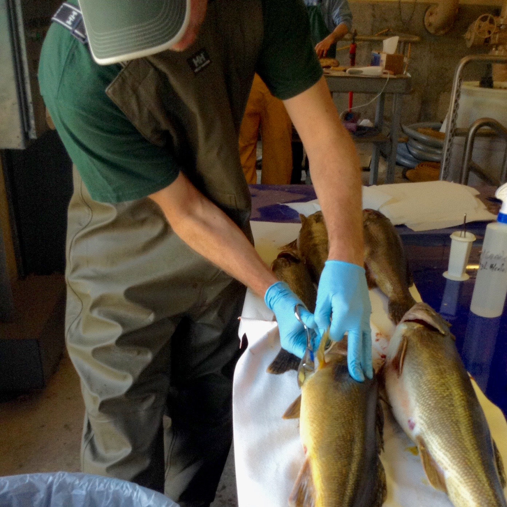
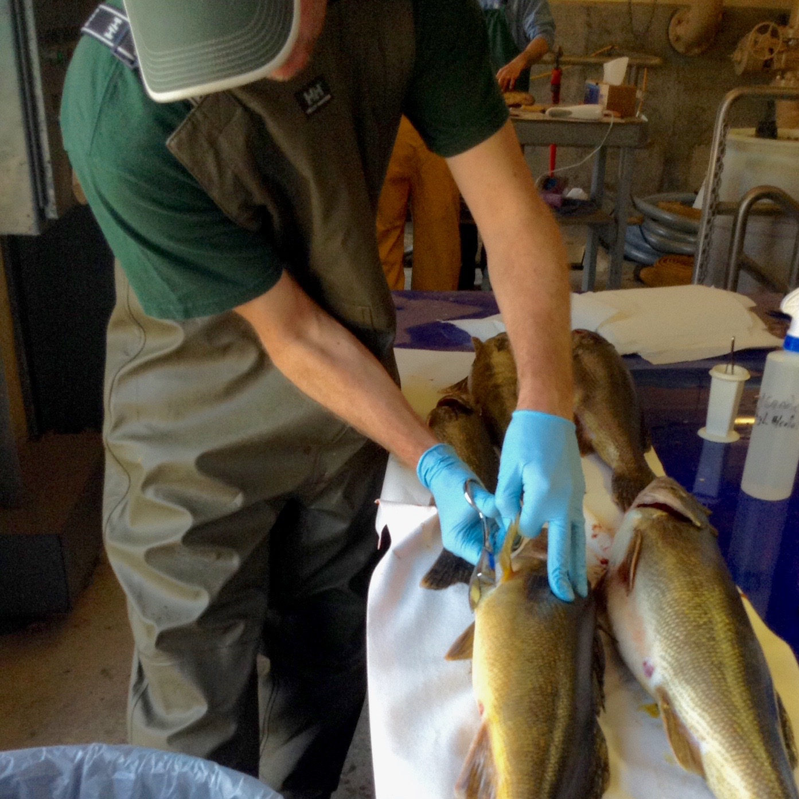
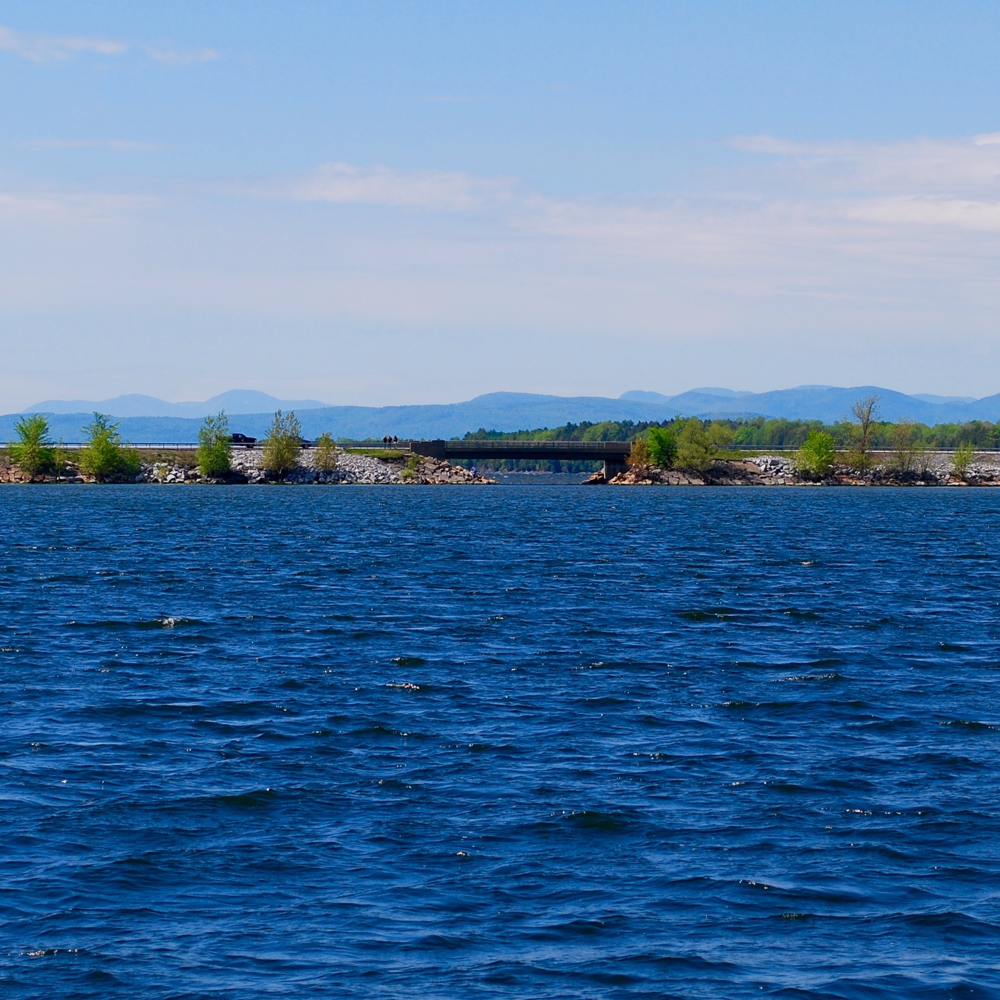
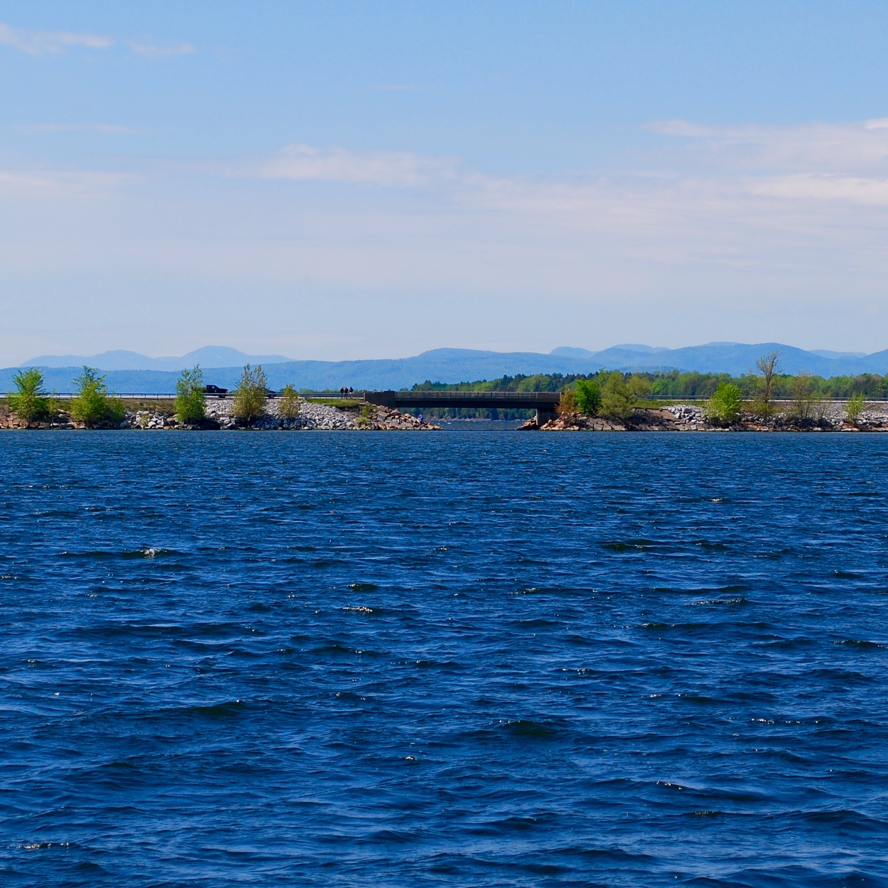
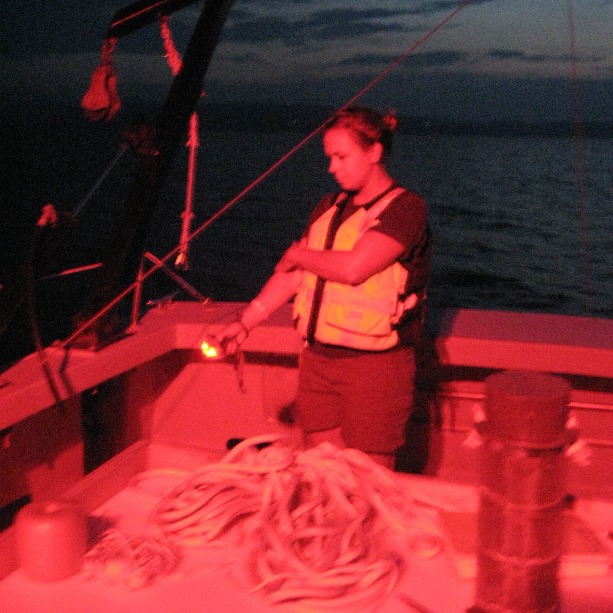
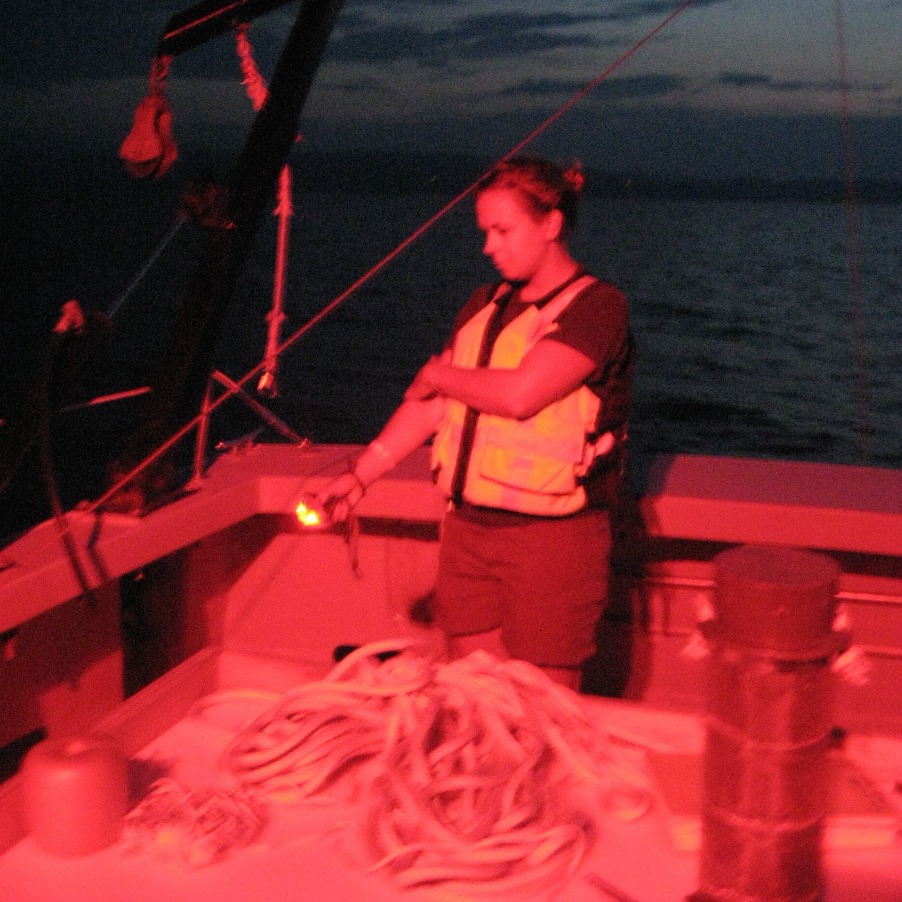

Current Research
I am interested in understanding how populations of fish are sub-structured across their range and what factors limit dispersal. To ubelieve that the best understanding of ecology comes from the intercept between behavioral ecology and evolutionary biology. My current research uses molecular techniques in combination with long-term demography and mark-recapture datasets to determine how habitat fragmentation and landscapes structure fish populations.
.jpg)
 
 .jpg)
 
 

Masters Research
In addition to molecular ecology, I am interested in behavioral ecology. For two years I had the opportunity to research partial diel vertical migration behavior of Mysis diluviana in Lake Champlain. Using a combination of stable isotopes and basic demographic analysis I determined that gravid females and large Mysis with higher C:N content (lipid content) were more likely to remain on the bottom at night while the rest of the population migrated to the surface to feed.
 

Side Projects
Harmful cyanobacteria blooms are a global issue. One associated issue that has not been studied in detail though is how higher trophic levels such as fish are impacted by the influx of nutrition poor cyanobacteria at the base of the food web. Working with a colleague trained in lipid analysis, we conducted a two month experiment to determine how essential fatty acid poor diets similar to what might happen during a long cyanobacteria bloom impact fish fatty acid content, swimming performance and respiration.


Apps and Data
I believe that making data accessible and easy to visualize is an important step in replicable, transparent science. Making my data accessile through puclic databases such as KNB, code sharing through GitHub, and data visualization with my own RShiny are just a few ways that I have tried to make my own science more accessible.